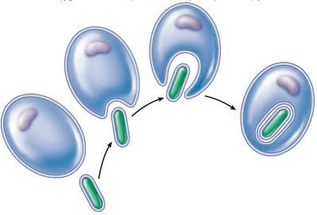

Introdução:
As células são a unidade básica da vida e podem ser classificadas em dois tipos principais: procarióticas e eucarióticas. Essa distinção é fundamental para compreender a diversidade e a evolução dos organismos vivos. Essas estruturas são vivas, carregam a informação genética de um determinado organismo e são capazes de transmitir essa informação no momento da divisão celular.
Venha descobrir mais sobre as células nesse site!
Explore Mais



Entenda a Teoria da Endossimbiose.
Saiba mais